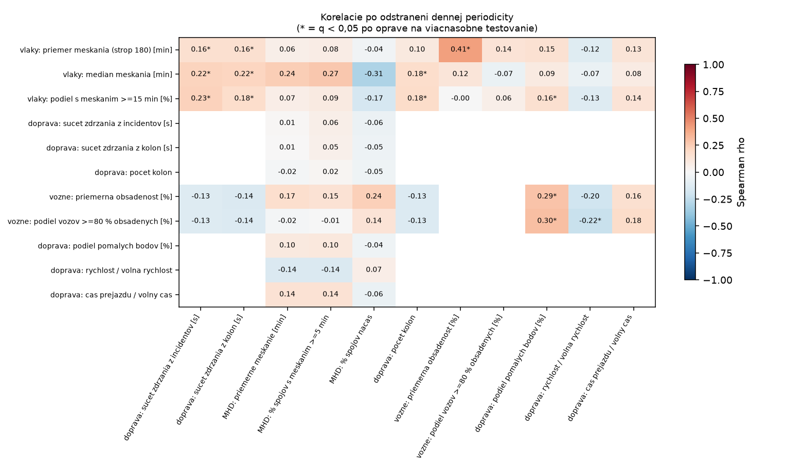
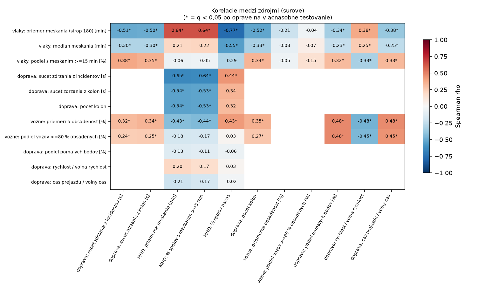
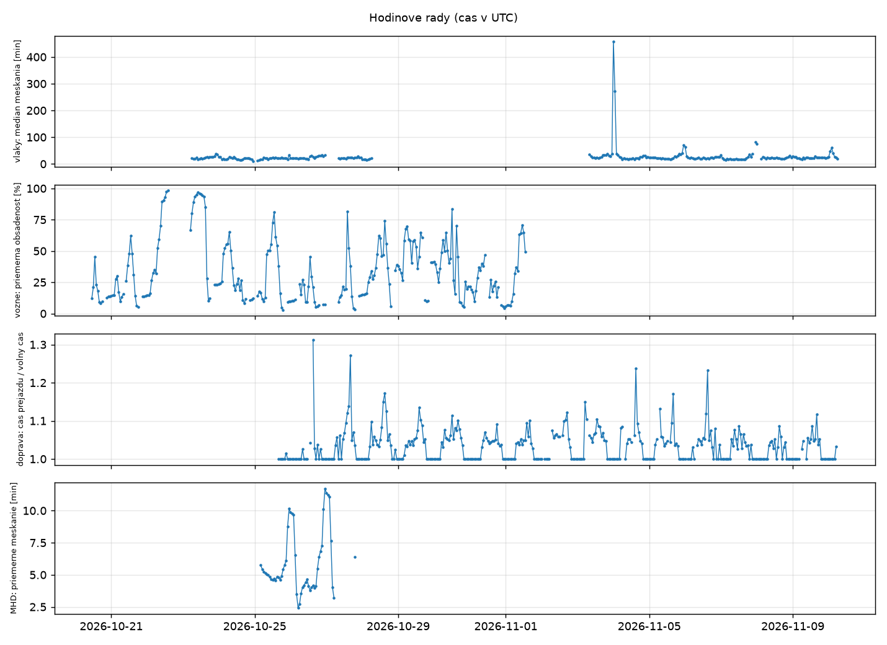

Analýza: vlaky, doprava a MHD
Zjednotené dáta z repozitárov idos-meskanie, idos-grafy, ba-livetraffic a mhd-stats. Prepočítava sa automaticky každý deň.
Dáta sa prekrývajú len niekoľko dní, takže ide o prieskumné zistenia, nie o dôkaz. Korelácia nie je príčinnosť.
Súbory na stiahnutie
Korelácie po odstránení denného rytmu

Surové korelácie

Hodinové rady

Report
Načítavam…